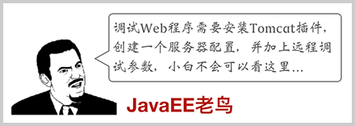
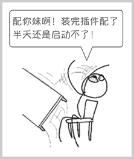
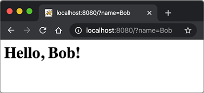

${user_name} @ ${created_at} ${delete_action}
${content}
${comment_replies}
${comment_action}
${comment_reply_form}
../git/BEFORE.md
在上一节中，我们看到，一个完整的Web应用程序的开发流程如下：
这个过程是不是很繁琐？如果我们想在IDE中断点调试，还需要打开Tomcat的远程调试端口并且连接上去。


许多初学者经常卡在如何在IDE中启动Tomcat并加载webapp，更不要说断点调试了。
我们需要一种简单可靠，能直接在IDE中启动并调试webapp的方法。
因为Tomcat实际上也是一个Java程序，我们看看Tomcat的启动流程：
main()方法；启动Tomcat无非就是设置好classpath并执行Tomcat某个jar包的main()方法，我们完全可以把Tomcat的jar包全部引入进来，然后自己编写一个main()方法，先启动Tomcat，然后让它加载我们的webapp就行。
我们新建一个web-servlet-embedded工程，编写pom.xml如下：
<project xmlns="http://maven.apache.org/POM/4.0.0"
xmlns:xsi="http://www.w3.org/2001/XMLSchema-instance"
xsi:schemaLocation="http://maven.apache.org/POM/4.0.0 http://maven.apache.org/xsd/maven-4.0.0.xsd">
<modelVersion>4.0.0</modelVersion>
<groupId>com.itranswarp.learnjava</groupId>
<artifactId>web-servlet-embedded</artifactId>
<version>1.0-SNAPSHOT</version>
<packaging>war</packaging>
<properties>
<project.build.sourceEncoding>UTF-8</project.build.sourceEncoding>
<project.reporting.outputEncoding>UTF-8</project.reporting.outputEncoding>
<maven.compiler.source>17</maven.compiler.source>
<maven.compiler.target>17</maven.compiler.target>
<java.version>17</java.version>
<tomcat.version>10.1.1</tomcat.version>
</properties>
<dependencies>
<dependency>
<groupId>org.apache.tomcat.embed</groupId>
<artifactId>tomcat-embed-core</artifactId>
<version>${tomcat.version}</version>
<scope>provided</scope>
</dependency>
<dependency>
<groupId>org.apache.tomcat.embed</groupId>
<artifactId>tomcat-embed-jasper</artifactId>
<version>${tomcat.version}</version>
<scope>provided</scope>
</dependency>
</dependencies>
</project>
其中，<packaging>类型仍然为war，引入依赖tomcat-embed-core和tomcat-embed-jasper，引入的Tomcat版本<tomcat.version>为10.1.1。
不必引入Servlet API，因为引入Tomcat依赖后自动引入了Servlet API。因此，我们可以正常编写Servlet如下：
@WebServlet(urlPatterns = "/")
public class HelloServlet extends HttpServlet {
protected void doGet(HttpServletRequest req, HttpServletResponse resp) throws ServletException, IOException {
resp.setContentType("text/html");
String name = req.getParameter("name");
if (name == null) {
name = "world";
}
PrintWriter pw = resp.getWriter();
pw.write("<h1>Hello, " + name + "!</h1>");
pw.flush();
}
}
然后，我们编写一个main()方法，启动Tomcat服务器：
public class Main {
public static void main(String[] args) throws Exception {
// 启动Tomcat:
Tomcat tomcat = new Tomcat();
tomcat.setPort(Integer.getInteger("port", 8080));
tomcat.getConnector();
// 创建webapp:
Context ctx = tomcat.addWebapp("", new File("src/main/webapp").getAbsolutePath());
WebResourceRoot resources = new StandardRoot(ctx);
resources.addPreResources(
new DirResourceSet(resources, "/WEB-INF/classes", new File("target/classes").getAbsolutePath(), "/"));
ctx.setResources(resources);
tomcat.start();
tomcat.getServer().await();
}
}
这样，我们直接运行main()方法，即可启动嵌入式Tomcat服务器，然后，通过预设的tomcat.addWebapp("", new File("src/main/webapp")，Tomcat会自动加载当前工程作为根webapp，可直接在浏览器访问http://localhost:8080/：

通过main()方法启动Tomcat服务器并加载我们自己的webapp有如下好处：
如果要生成可执行的war包，用java -jar xxx.war启动，则需要把Tomcat的依赖项的<scope>去掉，然后配置maven-war-plugin如下：
<project ...>
...
<build>
<finalName>hello</finalName>
<plugins>
<plugin>
<groupId>org.apache.maven.plugins</groupId>
<artifactId>maven-war-plugin</artifactId>
<version>3.3.2</version>
<configuration>
<!-- 复制classes到war包根目录 -->
<webResources>
<resource>
<directory>${project.build.directory}/classes</directory>
</resource>
</webResources>
<archiveClasses>true</archiveClasses>
<archive>
<manifest>
<!-- 添加Class-Path -->
<addClasspath>true</addClasspath>
<!-- Classpath前缀 -->
<classpathPrefix>tmp-webapp/WEB-INF/lib/</classpathPrefix>
<!-- main启动类 -->
<mainClass>com.itranswarp.learnjava.Main</mainClass>
</manifest>
</archive>
</configuration>
</plugin>
</plugins>
</build>
</project>
生成的war包结构如下：
hello.war
├── META-INF
│ ├── MANIFEST.MF
│ └── maven
│ └── ...
├── WEB-INF
│ ├── classes
│ ├── lib
│ │ ├── ecj-3.18.0.jar
│ │ ├── tomcat-annotations-api-10.1.1.jar
│ │ ├── tomcat-embed-core-10.1.1.jar
│ │ ├── tomcat-embed-el-10.1.1.jar
│ │ ├── tomcat-embed-jasper-10.1.1.jar
│ │ └── web-servlet-embedded-1.0-SNAPSHOT.jar
│ └── web.xml
└── com
└── itranswarp
└── learnjava
├── Main.class
├── TomcatRunner.class
└── servlet
└── HelloServlet.class
之所以要把编译后的classes复制到war包根目录，是因为用java -jar hello.war启动时，JVM的Class Loader不会查找WEB-INF/lib的jar包，而是直接从hello.war的根目录查找。MANIFEST.MF生成的内容如下：
Main-Class: com.itranswarp.learnjava.Main
Class-Path: tmp-webapp/WEB-INF/lib/tomcat-embed-core-10.1.1.jar tmp-weba
pp/WEB-INF/lib/tomcat-annotations-api-10.1.1.jar tmp-webapp/WEB-INF/lib
/tomcat-embed-jasper-10.1.1.jar tmp-webapp/WEB-INF/lib/tomcat-embed-el-
10.1.1.jar tmp-webapp/WEB-INF/lib/ecj-3.18.0.jar
注意到Class-Path的路径，这里定义的Class-Path相当于java -cp指定的Classpath，JVM不会在一个jar包中查找jar包内的jar包，它只会在文件系统中搜索，因此，我们要修改main()方法，在执行main()方法时，先自解压war包，再启动Tomcat：
public class Main {
public static void main(String[] args) throws Exception {
// 判定是否从jar/war启动:
String jarFile = Main.class.getProtectionDomain().getCodeSource().getLocation().getFile();
boolean isJarFile = jarFile.endsWith(".war") || jarFile.endsWith(".jar");
// 定位webapp根目录:
String webDir = isJarFile ? "tmp-webapp" : "src/main/webapp";
if (isJarFile) {
// 解压到tmp-webapp:
Path baseDir = Paths.get(webDir).normalize().toAbsolutePath();
if (Files.isDirectory(baseDir)) {
Files.delete(baseDir);
}
Files.createDirectories(baseDir);
System.out.println("extract to: " + baseDir);
try (JarFile jar = new JarFile(jarFile)) {
List<JarEntry> entries = jar.stream().sorted(Comparator.comparing(JarEntry::getName))
.collect(Collectors.toList());
for (JarEntry entry : entries) {
Path res = baseDir.resolve(entry.getName());
if (!entry.isDirectory()) {
System.out.println(res);
Files.createDirectories(res.getParent());
Files.copy(jar.getInputStream(entry), res);
}
}
}
// JVM退出时自动删除tmp-webapp:
Runtime.getRuntime().addShutdownHook(new Thread(() -> {
try {
Files.walk(baseDir).sorted(Comparator.reverseOrder()).map(Path::toFile).forEach(File::delete);
} catch (IOException e) {
e.printStackTrace();
}
}));
}
// 启动Tomcat:
TomcatRunner.run(webDir, isJarFile ? "tmp-webapp" : "target/classes");
}
}
// Tomcat启动类:
class TomcatRunner {
public static void run(String webDir, String baseDir) throws Exception {
Tomcat tomcat = new Tomcat();
tomcat.setPort(Integer.getInteger("port", 8080));
tomcat.getConnector();
Context ctx = tomcat.addWebapp("", new File(webDir).getAbsolutePath());
WebResourceRoot resources = new StandardRoot(ctx);
resources.addPreResources(new DirResourceSet(resources, "/WEB-INF/classes", new File(baseDir).getAbsolutePath(), "/"));
ctx.setResources(resources);
tomcat.start();
tomcat.getServer().await();
}
}
现在，执行java -jar hello.war时，JVM先定位hello.war的Main类，运行main()，自动解压后，文件系统目录如下：
<work>
├── hello.war
└── tmp-webapp
└── WEB-INF
├── lib
│ ├── ecj-3.18.0.jar
│ ├── tomcat-annotations-api-10.1.1.jar
│ ├── tomcat-embed-core-10.1.1.jar
│ ├── tomcat-embed-el-10.1.1.jar
│ ├── tomcat-embed-jasper-10.1.1.jar
│ └── web-servlet-embedded-1.0-SNAPSHOT.jar
└── web.xml
解压后的目录结构和我们在MANIFEST.MF中设定的Class-Path一致，因此，JVM能顺利加载Tomcat的jar包，然后运行Tomcat，启动Web App。
编写可执行的jar或者war需要注意的几点：
MANIFEST.MF中指定Main-Class和Class-Path；Main必须能在jar/war包的根目录下被JVM的Class Loader加载；Main负责解压jar/war，解压后的目录结构与MANIFEST.MF中设定的Class-Path一致；Main不能引用任何解压后才能被加载的类，例如org.apache.catalina.startup.Tomcat。对SpringBoot有所了解的童鞋可能知道，SpringBoot也支持在main()方法中一行代码直接启动Tomcat，并且还能方便地更换成Jetty等其他服务器。它的启动方式和我们介绍的是基本一样的，后续涉及到SpringBoot的部分我们还会详细讲解。
使用嵌入式Tomcat运行Servlet。
注意：引入的Tomcat的scope为provided，在Idea下运行时，需要设置Run/Debug Configurations，选择Application - Main，钩上Include dependencies with "Provided" scope，这样才能让Idea在运行时把Tomcat相关依赖包自动添加到classpath中。
开发Servlet时，推荐使用main()方法启动嵌入式Tomcat服务器并加载当前工程的webapp，便于开发调试，且不影响打包部署，能极大地提升开发效率。